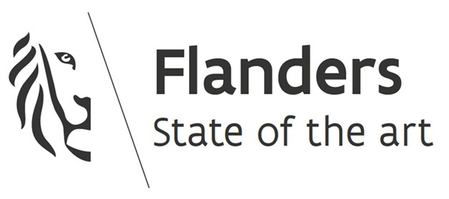
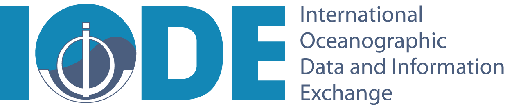
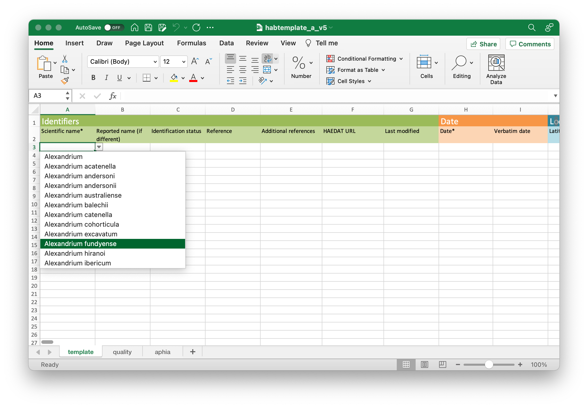
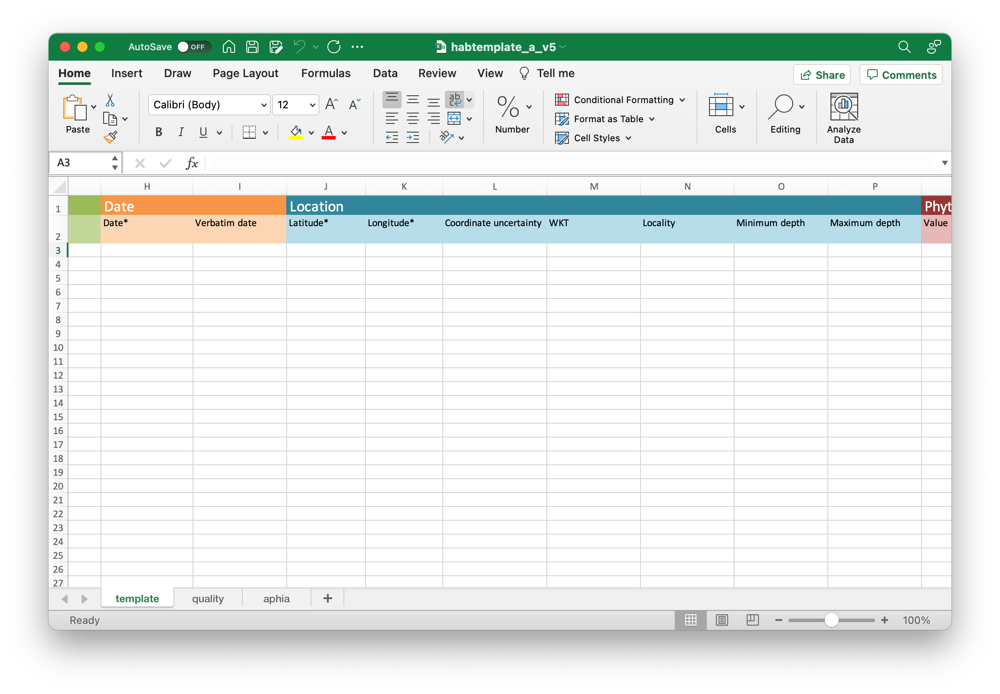
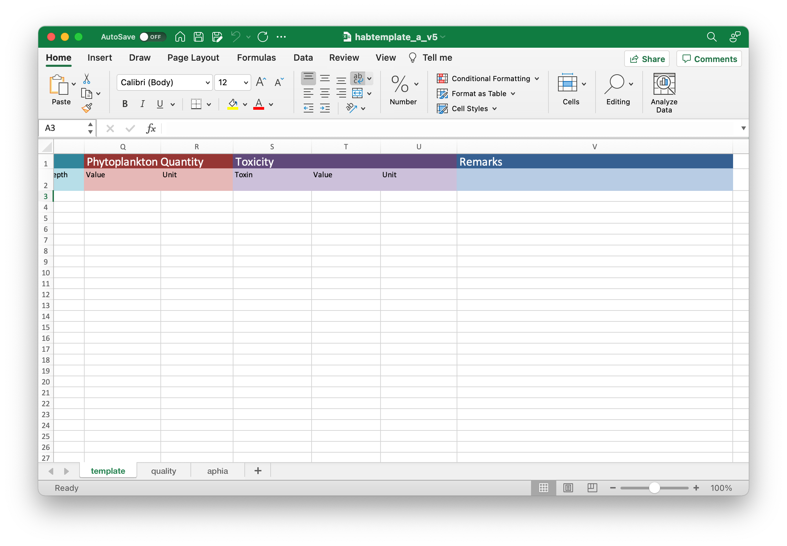
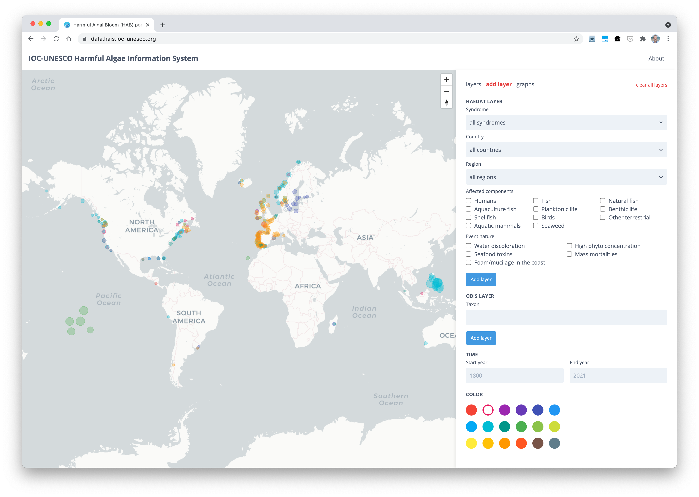

Introduction to OBIS
HAIS-HAEDAT TRAINING COURSE
ANCA-IOCARIBE
22 November 2021
Pieter Provoost
p.provoost@unesco.org
 
Data standards
The OBIS network uses the following standards to exchange data and metadata:
- Darwin Core (DwC)
- Ecological Metadata Language (EML)
- Darwin Core Archive (DwC-A)
Darwin Core (DwC)
Darwin Core is a standard maintained by the Darwin Core maintenance group. It includes a glossary of terms (in other contexts these might be called properties, elements, fields, columns, attributes, or concepts) intended to facilitate the sharing of information about biological diversity by providing identifiers, labels, and definitions.
quick reference guide: https://dwc.tdwg.org/terms/
DwC terms: location
| term | definition | type | examples |
|---|---|---|---|
| decimalLongitude | longitude in decimal degrees | numeric | 128.3 |
| decimalLatitude | latitude in decimal degrees | numeric | 51.682 |
| coordinateUncertaintyInMeters | coordinate uncertainty in meters | numeric | 18 |
| minimumDepthInMeters | minimum depth in meters | numeric | 0 |
| maximumDepthInMeters | maximum depth in meters | numeric | 10 |
| locality | the most specific description of the location (may be modified) | text | Pulau Sagara, Sulawesi, Indonesia |
| verbatimLocality | the most specific description of the location (original) | text | Pulau Sagara |
| footprintWKT | locality in WKT format | WKT | POLYGON ((119.45 -4.67, 119.42 -4.71, 119.45 -4.73, 119.48 -4.71, 119.45 -4.67)) |
| geodeticDatum | ellipsoid, geodetic datum, or spatial reference system | text | EPSG:4326 |
DwC terms: time
| term | definition | type | examples |
|---|---|---|---|
| eventDate | the date-time or interval during which an event occurred | ISO 8601 | 2018 2018-01 2018-01-02 2018-01-02T12:34:56 2018-01-02/2018-02-03 2018-01/2018-02 |
DwC terms: taxonomy
| term | definition | type | examples |
|---|---|---|---|
| scientificName | text | Abra alba | |
| scientificNameID | identifier for the scientific name, should be a WoRMS LSID | LSID | urn:lsid:marinespecies.org:taxname:129697 |
| identificationQualifier | phrase (“cf.”, “aff.”) to express the determiner’s doubts about the identification | text | cf. balteata |
| identifiedBy | list of people or groups who identified the subject | text | Theodore Pappenfuss | Robert Macey |
| identificationRemarks | text | distinguished from Metopa pusilla based on the uni-articulate palp |
DwC terms: identifiers
| term | definition | type | examples |
|---|---|---|---|
| institutionCode | name in use by the institution having custody of the object or information | text | NIWA |
| institutionID | identifier for the institution having custody of the object or information | URI | http://biocol.org/urn:lsid:biocol.org:col:34777 |
| collectionCode | name identifying the collection or dataset from which the record was derived | text | MAGNT_Echinoderm |
| collectionID | identifier for the collection or dataset from which the record was derived | URI | urn:lsid:biocol.org:col:35205 |
| occurrenceID | globally unique identifier for the occurrence | URI | urn:catalog:UWBM:Bird:89776 |
| catalogNumber | identifier for the record within the dataset or collection | text | MarBEF/MacroBEN_475031 |
| fieldNumber | identifier given to the event in the field | text | 475031 |
Darwin Core Archive (DwC-A)
Darwin Core Archive (DwC-A) is a biodiversity informatics data standard that makes use of the Darwin Core terms to produce a single, self contained dataset for sharing species-level (taxonomic), species-occurrence data, and sampling-event data.
Darwin Core Archive (DwC-A): data tables
Core: http://rs.gbif.org/core
Extensions: http://rs.gbif.org/extension
Example extensions:
Darwin Core Archive (DwC-A): meta.xml
meta.xml is the archive descriptor
<archive xmlns="http://rs.tdwg.org/dwc/text/" metadata="eml.xml">
<core encoding="UTF-8" fieldsTerminatedBy="\t" linesTerminatedBy="\n"
fieldsEnclosedBy="" ignoreHeaderLines="1"
rowType="http://rs.tdwg.org/dwc/terms/Occurrence">
<files>
<location>occurrence.txt</location>
</files>
<id index="0" />
<field index="6" term="http://rs.tdwg.org/dwc/terms/institutionCode"/>
<field index="7" term="http://rs.tdwg.org/dwc/terms/collectionCode"/>
<field index="9" term="http://rs.tdwg.org/dwc/terms/basisOfRecord"/>
<field index="12" term="http://rs.tdwg.org/dwc/terms/occurrenceID"/>
<field index="13" term="http://rs.tdwg.org/dwc/terms/catalogNumber"/>
<field index="15" term="http://rs.tdwg.org/dwc/terms/recordNumber"/>
<field index="20" term="http://rs.tdwg.org/dwc/terms/occurrenceStatus"/>
<field index="28" term="http://rs.tdwg.org/dwc/terms/eventDate"/>
<field index="57" term="http://rs.tdwg.org/dwc/terms/scientificNameID"/>
<field index="58" term="http://rs.tdwg.org/dwc/terms/scientificName"/>
</core>
<extension encoding="UTF-8" fieldsTerminatedBy="\t" linesTerminatedBy="\n"
fieldsEnclosedBy="" ignoreHeaderLines="1"
rowType="http://rs.iobis.org/obis/terms/ExtendedMeasurementOrFact">
<files>
<location>extendedmeasurementorfact.txt</location>
</files>
<coreid index="0" />
<field index="1" term="http://rs.tdwg.org/dwc/terms/measurementID"/>
<field index="2" term="http://rs.tdwg.org/dwc/terms/occurrenceID"/>
<field index="3" term="http://rs.tdwg.org/dwc/terms/measurementType"/>
<field index="4" term="http://rs.iobis.org/obis/terms/measurementTypeID"/>
<field index="5" term="http://rs.tdwg.org/dwc/terms/measurementValue"/>
<field index="6" term="http://rs.iobis.org/obis/terms/measurementValueID"/>
<field index="7" term="http://rs.tdwg.org/dwc/terms/measurementAccuracy"/>
<field index="8" term="http://rs.tdwg.org/dwc/terms/measurementUnit"/>
<field index="9" term="http://rs.iobis.org/obis/terms/measurementUnitID"/>
<field index="10" term="http://rs.tdwg.org/dwc/terms/measurementDeterminedDate"/>
<field index="11" term="http://rs.tdwg.org/dwc/terms/measurementDeterminedBy"/>
<field index="12" term="http://rs.tdwg.org/dwc/terms/measurementMethod"/>
<field index="13" term="http://rs.tdwg.org/dwc/terms/measurementRemarks"/>
</extension>
</archive>Darwin Core Archive (DwC-A): eml.xml
eml.xml contains the dataset metadata in EML
<?xml version="1.0" encoding="UTF-8"?>
<eml:eml xmlns:eml="eml://ecoinformatics.org/eml-2.1.1" xmlns:dc="http://purl.org/dc/terms/" xmlns:xsi="http://www.w3.org/2001/XMLSchema-instance" xsi:schemaLocation="eml://ecoinformatics.org/eml-2.1.1 http://rs.gbif.org/schema/eml-gbif-profile/1.1/eml.xsd" packageId="ef5c63cc-ed75-47b2-a6fd-60969f4fad07/v1.1" system="http://gbif.org" scope="system" xml:lang="eng">
<dataset>
<alternateIdentifier>http://ipt.vliz.be/eurobis/resource?r=kielbay70</alternateIdentifier>
<title xml:lang="eng">70 samples data of Kiel Bay</title>
<creator>
<organizationName>Christian-Albrechts-University Kiel; Leibniz Institute of Marine Sciences Marine Ecology Division (CAU)</organizationName>
</creator>
<creator>
<individualName>
<givenName>Heye</givenName>
<surName>Rumohr</surName>
</individualName>
<organizationName>Christian-Albrechts-University Kiel; Leibniz Institute of Marine Sciences Marine Ecology Division (CAU)</organizationName>
<electronicMailAddress>hrumohr@geomar.de</electronicMailAddress>
</creator>
<metadataProvider>
<individualName>
<surName>EurOBIS Data Management Team</surName>
</individualName>
<organizationName>Flanders Marine Institute (VLIZ)</organizationName>
<address>
<country>BE</country>
</address>
<electronicMailAddress>info@eurobis.org</electronicMailAddress>
<onlineUrl>http://www.eurobis.org</onlineUrl>
</metadataProvider>
<pubDate>2019-09-19</pubDate>
<language>eng</language>
<abstract>
<para>The ICES/HELCOM Intercalibration Exercise provided a series of replicate samples from one single station in Kiel Bay from May 1995</para>
</abstract>
<keywordSet>
<keyword>Benthic fauna</keyword>
<keyword>Benthos</keyword>
<keyword>Biogeography</keyword>
<keyword>Macrobenthos</keyword>
<keywordThesaurus>ASFA</keywordThesaurus>
</keywordSet>
<intellectualRights>
<para>
This work is licensed under a
<ulink url="http://creativecommons.org/licenses/by/4.0/legalcode">
<citetitle>Creative Commons Attribution (CC-BY) 4.0 License</citetitle>
</ulink>
.
</para>
</intellectualRights>
<contact>
<individualName>
<givenName>Dirk</givenName>
<surName>Fleischer</surName>
</individualName>
<organizationName>Christian-Albrechts-University Kiel; Leibniz Institute of Marine Sciences Marine Ecology Division (CAU)</organizationName>
<electronicMailAddress>dfleischer@kms.uni-kiel.de</electronicMailAddress>
</contact>
<contact>
<individualName>
<givenName>Heye</givenName>
<surName>Rumohr</surName>
</individualName>
<organizationName>Christian-Albrechts-University Kiel; Leibniz Institute of Marine Sciences Marine Ecology Division (CAU)</organizationName>
<electronicMailAddress>hrumohr@geomar.de</electronicMailAddress>
</contact>
</dataset>
</eml:eml>Data publishing

IPT
The Integrated Publishing Toolkit, or IPT, is open-source software developed by the GBIF Secretariat which enables the publishing of content in databases, Microsoft Excel spreadsheets, or text files using the open Darwin Core and Ecological Metadata Language standards.
manual: https://github.com/gbif/ipt/wiki/IPT2ManualNotes.wiki
The HAB template



Data access
The HAIS data portal
